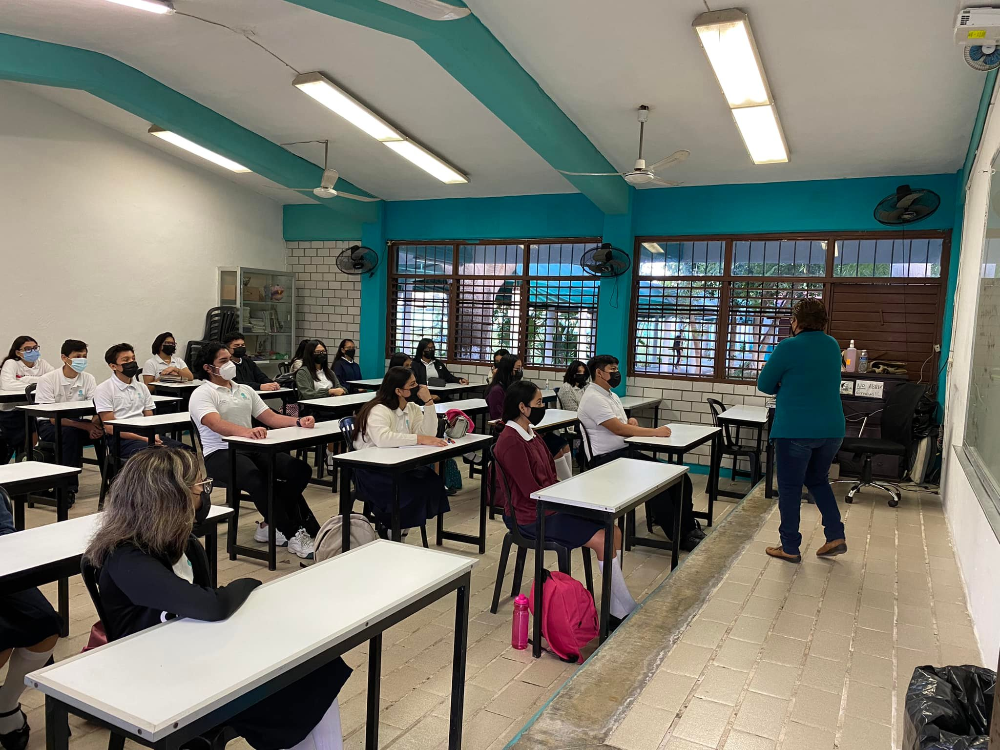
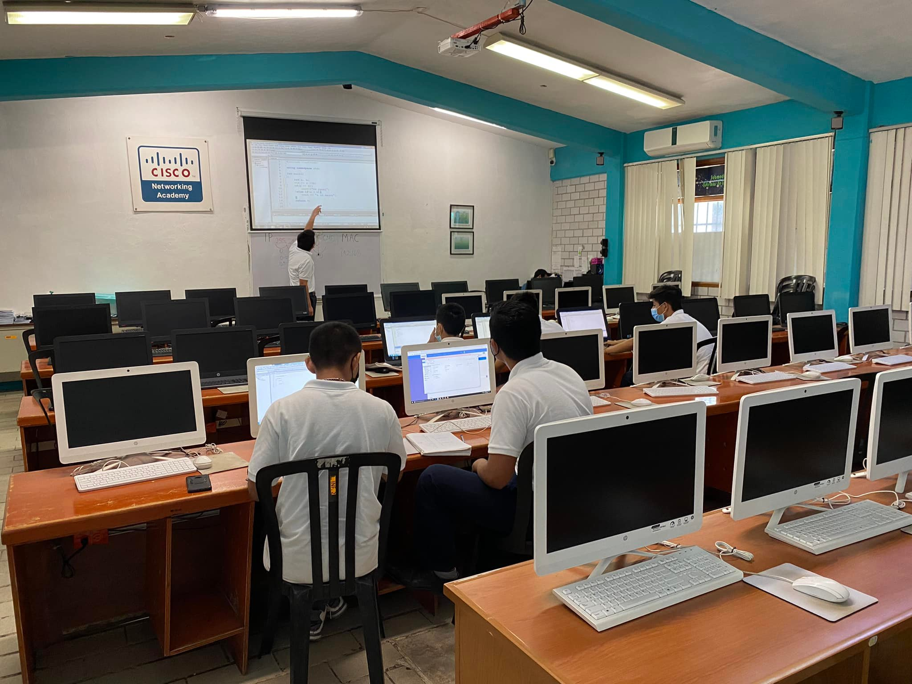
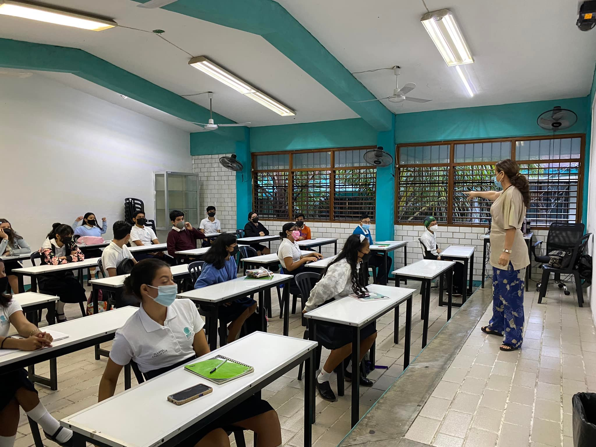
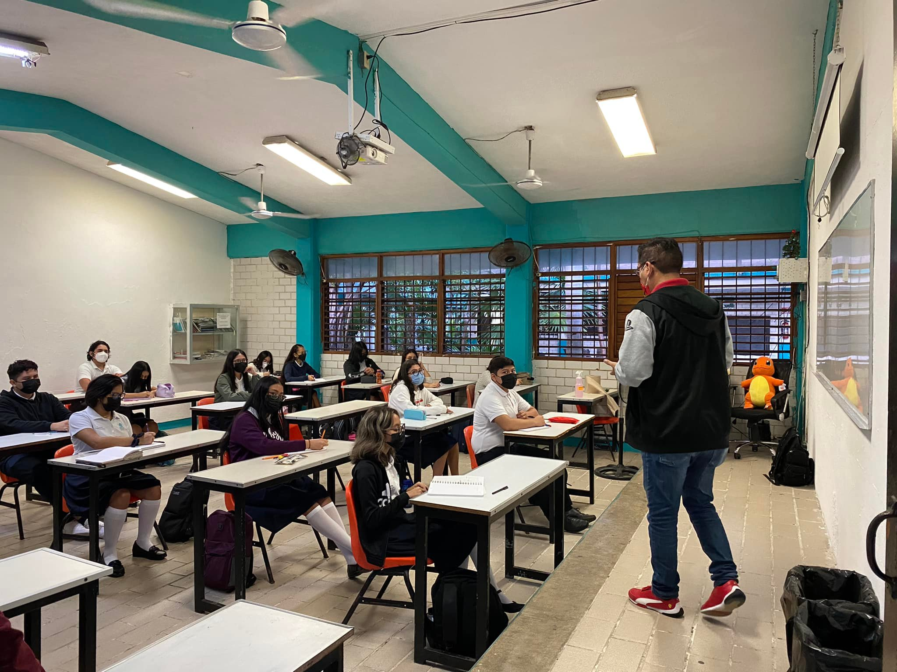
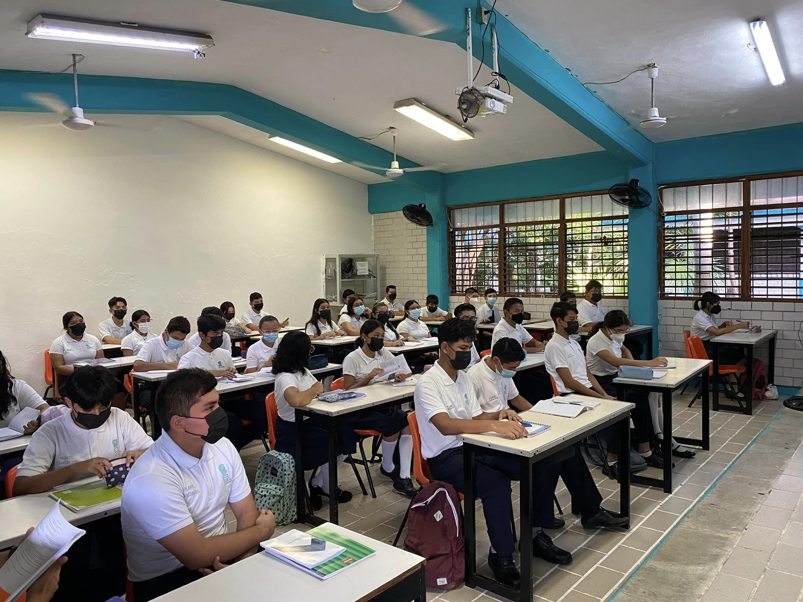

Administración

Permiten al alumnado representar la realidad de su entorno social, para transformarla mediante la apropiación de conocimientos, el descubrimiento de significados, la generación de ideas y transmitirlas eficazmente.
Su propósito es proporcionar herramientas y favorecer el desarrollo de habilidades y actitudes para que el estudiantado estructure proyectos, sustentables, viables y factibles en el contexto en el que vive con una visión emprendedora.
Los egresados de esta capacitación se pueden integrar a la vida laboral tanto en instituciones públicas como privadas en los siguientes perfiles ocupacionales: auxiliar administrativo, asistente de investigación, encuesta-entrevista, ventas y servicios financieros, analista de relaciones públicas y comunicación.
Tecnologías de la Información y la Comunicación

Esta capacitación desarrolla las habilidades comunicativas, verbales y no verbales para expresarse a través de diversos códigos y herramientas del lenguaje a través de diferentes tecnológias de la información. Por otra parte se vinculan de manera interdisciplinar tanto en el campo de Matemáticas como con el de comunicación, ya que aportan los elementos para la resolución de problemas mediante los algoritmos y la programación.
Su propósito es desarrollar la capacidad para proponer soluciones a problemas del contexto laboral y escolar de forma creativa e innovadora, con una postura ética y responsable como un ciudadano digital.
Turismo

Promueve el desarrollo de habilidades fundamentales del sector social-productivo, tales como: el liderazgo, la innovación, el autoaprendizaje, la comunicación asertiva en distintos contextos, la integración efectiva de equipos de trabajo y la creatividad al brindar servicios de manera sustentable.
Su propósito es valorar la relevancia del domino de las habilidades de comunicación en inglés en el sector turístico, implementando técnicas y procesos de comunicación del discurso lingüístico en inglés en un marco nacional, para solventar los requerimientos del turista al brindar servicios turísticos de calidad mediante una comunicación empática y asertiva, respetando el medio ambiente y el marco legal vigente, en diversos contextos turísticos de su entidad.
Contabilidad

Su propósito es desarrollar las competencias y habilidades prácticas que permitan de forma ética y responsable aplicar el proceso contable y administrativo para el uso de la información financiera, la cual debe ser veraz, confiable y oportuna para la toma de decisiones en beneficio de la entidad y el sector económico en el que se desarrolle.
Favorece en el estudiantado un análisis critico con visión emprendedora sobre los factores y aspectos fundamentales que intervienen en la productividad y competitividad de una organización y su relación con el entorno socioeconómico.
Ciencias de la Comunicación

Desarrolla conocimientos y habilidades para analizar, elaborar y diseñar mensajes utilizando la radio, y la televisión, los impresos, entre otros medios, partiendo de la base del proceso comunicativo para estructurar planes de promoción integrales.
Permite que el estudiantado logre integrarse o vincularse de manera inmediata en el contexto en el que se desarrolle.
Su propósito es descubrir habilidades comunicativas. de forma informada y asertiva para concretar productos diversos como: textos, discursos, gráficos y audiovisuales innovadores con impacto masivo que alcancen las expectativas de un posible cliente u organización y contemplen las necesidades de su contexto.